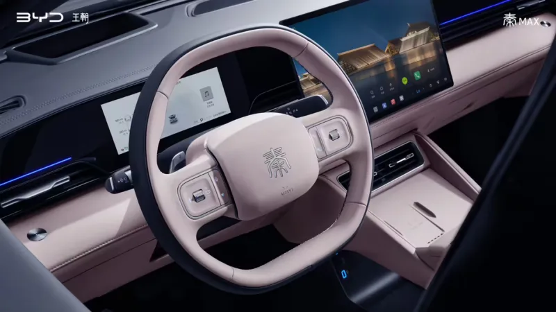

▲ BYD 친맥스. 8월 13일 중국에서 정식 공개되는 이 세단은 플래시차징 기술을 앞세워 젊은 소비자층을 겨냥한다
BYD가 신형 준중형 세단 '친맥스(Qin Max)'를 8월 13일 저녁 7시 30분 중국에서 정식 공개합니다. 친 시리즈의 플래그십으로 기존 친L 위에 새로 자리 잡는 이 모델의 핵심은 초고속 충전 기술 '플래시차징'입니다. 2세대 블레이드 배터리를 탑재한 사양은 10%에서 97%까지 충전하는 데 단 9분이면 충분하며, 최신 세대 기준으로는 1,500kW의 피크 충전 전력을 지원합니다.
1. 9분 충전이 가능한 이유 — 2세대 블레이드 배터리
친맥스의 핵심 무기는 BYD 자회사 핀드림스(FinDreams)가 만든 2세대 블레이드 배터리입니다. 최신 세대 플래시차징 기술은 최대 1,500kW의 피크 단일건 충전 전력을 지원하는데, 이는 웬만한 전기차 급속충전기 여러 대를 합친 수준의 출력입니다. 순수전기 사양은 52.868kWh LFP 배터리를 얹어 CLTC 기준 최대 630km 주행거리를 확보한 것으로 알려졌습니다. 배터리 용량 자체는 크지 않지만, 충전 속도로 이 약점을 상쇄하는 전략입니다.

▲ 친맥스 후측면. 전장 4,866mm로 기존 친L보다 33mm 더 길어졌다
2. 순수전기와 PHEV, 두 갈래 전략
친맥스는 순수전기(EV)와 플러그인 하이브리드(DM-i) 두 가지 파워트레인으로 동시에 출시됩니다. 순수전기 사양은 120kW(161마력) 단일 모터로 구성되며, PHEV 사양인 DM-i는 1.5리터 자연흡기 엔진(74kW·99마력)에 최고 175kW(235마력)를 내는 전기모터를 조합합니다. 충전 인프라가 상대적으로 부족한 지역의 소비자까지 아우르려는 이원화 전략으로, BYD가 국내외 시장에서 반복적으로 활용해온 익숙한 접근 방식입니다.
| 항목 | 친맥스 | 친L |
|---|---|---|
| 전장 | 4,866mm | 4,830mm |
| 전폭 | 1,880mm | 1,900mm |
| 휠베이스 | 2,820mm | 2,790mm |
| 포지션 | 신규 플래그십 | 기존 상위 트림 |

▲ 친맥스 실내. 플로팅 터치스크린과 LCD 계기판, 스티어링 휠 뒤에 배치된 기어 셀렉터, 무선충전 패드까지 갖췄다
3. 젊은 층을 정조준한 이유
BYD는 친맥스를 젊은 소비자층을 겨냥한 모델로 명확히 포지셔닝하고 있습니다. 플로팅 터치스크린과 LCD 계기판, 스티어링 휠 뒤편에 배치된 독특한 기어 셀렉터, 센터터널의 무선충전 패드까지, 실내 구성 전반에서 트렌디한 감각을 강조했습니다. 이미 다수의 딜러점에 차량이 입고돼 정식 공개를 기다리고 있는 것으로 확인돼, BYD가 이번 출시에 상당한 공을 들이고 있음을 짐작할 수 있습니다.

▲ 친맥스 측면. 준중형 세단 시장에서 젊은 소비자층을 겨냥한 BYD의 새로운 플래그십이다
4. 정리 — 中 준중형 세단 시장의 새 변수
친맥스의 등장으로 중국 준중형 세단 시장의 경쟁 구도에 또 하나의 변수가 추가됩니다. 이미 친 시리즈만으로도 상당한 판매량을 기록해온 BYD가, 초고속 충전이라는 명확한 차별화 포인트를 앞세워 플래그십 자리를 새롭게 정의하려는 모습입니다. 정확한 가격은 8월 13일 공개 행사에서 함께 발표될 예정이며, 국내 출시 여부와 시기는 아직 확인되지 않았습니다.